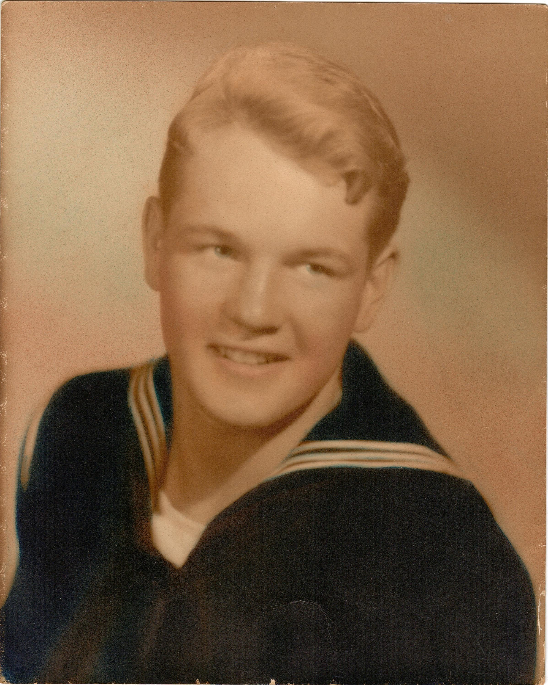

Gus and Greta Nasman
Two extordianry people.
Gus and Greta Timeline
- 1940 Married in Massachussets.
- 1954 Had their first son (my dad).
- 1940 Had thier second son Uncle Ricky.
- 1940 Lived happily everafter.

Gus Nasman
- 1940 Born
- 1954 Raised
- 1940 Accomplished
- 1940 Passed
Greta Nasman
- 1940 Born
- 1954 Raised
- 1940 Accomplished
- 1940 Passed